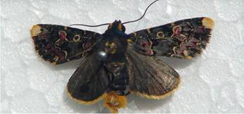

ORNAMENTAL PLANTS :: PEST :: LILY MOTH
6. Lily moth: Polytela gloriosae (Noctuidae: Lepidoptera)
Distribution and status: Sporadic and specific pest in India and Sri Lanka.
Host range: Lilies
Damage symptoms: Larvae feed on the green matter of leaves which may result in complete defoliation of lily plants.
|  | Bionomics :vAdult has red, yellow and black mosaic pattern on fore wings with a row of black and yellow dots on the apical margin. The hind wings are black. Adult lays 13-42 round, yellowish eggs in clusters on the apical portion of the undersurface of the leaves. Larvae emerge in 3-6 days and they feed on leaves for 16-20 days. Larvae have chocolate brown head and possess black, white and red mosaic patterns on the body. They pupate in soil in earthern cocoon and adult emerge in 15 – 20 days. Insect has 2 generations per year and the pupae of second generation hibernate. |
Management : Spray malathion 50 EC or endosulfan 35 EC 1.0 L in 500 L of water/ha.